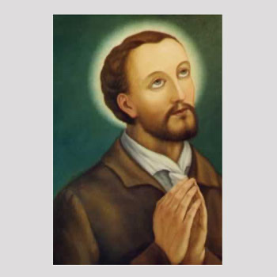

Sjevernoamerički mučenici (8 svetaca)
Brat
Sv. Ivan de la Lande
† 1646.
Laički suradnik pridružio se isusovačkom radu u Novoj Francuskoj i pratio Izaka Joguesa među Mohawke. Njihov pokušaj mirovnoga približavanja završio je zarobljavanjem i smrću, a Crkva ih zajedno časti među sjevernoameričkim mučenicima.

Izvor slike
- Spomendan
- 19. studenoga
- Zaštitništvo
- Nije navedeno u izvoru
- Životni vijek
- † 1646.
- Djelovanje
- Misije i evangelizacija · Mučeništvo · Dijalog i pomirenje
- Razdoblje
- 17. stoljeće
- Liturgijski stupanj — zajednički izvor
- Neobvezni spomendan
- Rođenje — dostupni podaci
- Datum i godina rođenja nisu potvrđeni u provjerenim izvorima.
- Mjesto rođenja
- Dieppe, Normandija, Francuska
- Datum smrti
- 19.11.1646.
- Mjesto smrti/mučeništva
- Ossernenon (današnja država New York), SAD
- Okolnosti smrti/mučeništva
- Ubijen u zasjedi pri pokušaju dolaska do tijela Izaka Joguesa.
- Uloga
- Brat
- Mučenik
- Da
- Ostale oznake
- Laički misionarski suradnik (donné); sjevernoamerički mučenik
- Pripadnost
- Pratitelj isusovaca
- Drugi oblici imena
- Ivan de Lalande · John de la Lande · John · Jean de Lalande · Jean de La Lande · John de Lalande
Ovaj profil upućuje na zajednički izvor „Sveti Ivan de Brébeuf, Izak Jogues i drugovi, mučenici”. Slijedi životopis skupine ili zajednički prikaz mučeništva; zajednički podaci nisu svi osobni podaci ove osobe.
Zajednički životopis
Ivan de Brébeuf godinama je učio jezik Wendata kako bi mogao govoriti o Kristu ljudima među kojima je živio. Izak Jogues nakon zatočeništva i povratka u Francusku ponovno je prešao ocean i nastavio misiju. Uz njih su djelovali svećenici i laički suradnici koji su poučavali, liječili i pratili zajednice u opasnosti. Crkva ih časti kao osmoricu sjevernoameričkih mučenika, stradalih između 1642. i 1649. na područjima današnje Kanade i Sjedinjenih Američkih Država.
Skupinu čine isusovački svećenici Ivan de Brébeuf, Izak Jogues, Antun Daniel, Gabrijel Lalemant, Karlo Garnier i Noël Chabanel te laički suradnici René Goupil i Ivan de La Lande. Svaki je u misiju unio drukčije iskustvo i sposobnosti. Svećenici su propovijedali, poučavali i dijelili sakramente, dok su suradnici pomagali u liječenju, putovanjima i praktičnim poslovima. Zajedno su pripadali misijskom djelu koje je ovisilo o mnogim rukama, o poznavanju jezika i o odnosima povjerenja s domaćim stanovništvom.
Njihovo se djelovanje odvijalo u Novoj Francuskoj, usred europske kolonizacije i složenih odnosa među domorodačkim narodima. Francuzi su bili povezani s Wendatima, dok su Mohawki i drugi narodi saveza Haudenosaunee imali vlastite političke i trgovačke odnose, među ostalim s Nizozemcima. Trgovina krznom, pristup oružju i borba za putove zaoštravali su ratne sukobe. Epidemije su teško pogađale domorodačke zajednice. Misionari su živjeli unutar tih savezništava i stradanja, a među ljudima koje su susretali nalazili su i prijatelje, domaćine i zaštitnike.
Ivan de Brébeuf stigao je u Novu Francusku 1625. Njegov rad među Wendatima zahtijevao je dugo učenje. Jezik nije bilo dovoljno svesti na nekoliko izraza za propovijed: trebalo je razumjeti kako ljudi oblikuju misao i objasniti kršćansku vjeru riječima koje mogu primiti. Brébeuf je sudjelovao u sastavljanju katekizma i jezičnih pomagala za misionare. Njegov rad i rad suradnika ostavili su trag važan i za kasnije poznavanje wendatskoga jezika. Naviještanje je tako bilo povezano sa slušanjem i učenjem od ljudi kojima je došao.
Misija Sainte-Marie među Wendatima postala je središte iz kojega su isusovci odlazili u okolna naselja. Putovali su rijekama i jezerima, često u čamcima, te boravili s ljudima kojima su služili. Svakodnevica je uključivala pouku, brigu za bolesne, pripravu za krštenje i slavljenje mise. U širenju vjere sudjelovali su i domaći kršćani, koji su primljenu poruku prenosili u vlastitim obiteljima i zajednicama. Misionarski rad rastao je kroz te odnose, a rat i bolest pogađali su jednako mnoge od onih koji su ga nosili.
Izak Jogues i René Goupil zarobljeni su 1642. tijekom putovanja sa skupinom Wendata. Goupil je pomagao kao kirurg i bolničar. Ranije je pokušao stupiti u isusovački novicijat, ali ga je zbog zdravstvenih teškoća morao napustiti. Nastavio je služiti misiji kao laik. U zatočeništvu je zatražio da ga Jogues primi u Družbu kao brata te je, prema isusovačkom životopisu, položio zavjete. Njegov put prema redovničkom predanju dovršavao se u okolnostima u kojima je za pomoć drugima imao vrlo malo sredstava.
Jogues je u zatočeništvu ostao svećenik svojim suputnicima. Ohrabrivao ih je, slušao Goupilovu ispovijed i pripravljao ih za mogućnost smrti. Njegov izvještaj osobito čuva uspomenu na molitvu Isusovu imenu kojom su se međusobno podupirali. Goupil je ubijen 29. rujna 1642. Jogues je ostao živ, teško ranjen i zatočen. U njegovoj su se blizini nalazili ljudi različitih odluka: neki su tražili njegovu smrt, a drugi pomagali da bude zaštićen i da naposljetku ode.
Uz pomoć dobrohotnih pojedinaca iz mohačke zajednice i nizozemskih doseljenika uspio je pobjeći te se vratio u Francusku. Posljedice ozljeda otežavale su mu svećeničku službu, pa mu je papa Urban VIII. dopustio ponovno slaviti misu unatoč tjelesnim oštećenjima koja su prema tadašnjim pravilima bila zapreka. Euharistija je ostala u središtu njegova poziva. Nakon oporavka ponovno je otišao u Novu Francusku i nastavio služiti ondje gdje je već prošao kroz zatočeništvo.
Godine 1646. vratio se među Mohawke radi mirovnih kontakata i mogućnosti nastavka misije. S njime je bio Ivan de La Lande, laik koji se pridružio isusovačkom radu. Među mohačkim skupinama bilo je zagovornika mira i onih koji su se protivili njihovu dolasku. Jogues i njegov suputnik ponovno su zarobljeni. Jogues je ubijen 18. listopada, a La Lande 19. listopada 1646. Njihova smrt prekinula je taj pokušaj približavanja, ali su ostali zapamćeni i susreti s ljudima koji su im prije toga nastojali pomoći.
Antun Daniel služio je u misiji Saint-Joseph. Ondje je 4. srpnja 1648., nakon mise, zatečen napadom na naselje. Do posljednjega je časa ostao među ljudima kojima je bio poslan te je ubijen u razaranju misije. Ratna se opasnost potom još više približila drugim zajednicama. Misionari su pokušavali nastaviti pastoralni život među stanovnicima koji su bili izloženi gubitku doma, zarobljavanju i raseljavanju. Sakramenti i zajednička molitva slavili su se u uvjetima sve veće nesigurnosti.
U ožujku 1649. napadnuto je naselje Saint-Louis, u kojem su djelovali Ivan de Brébeuf i Gabrijel Lalemant. Zarobljeni su i odvedeni, a zatim mučeni i ubijeni. Brébeuf je umro 16. ožujka, Lalemant sljedećega dana. Njihov je spomen ostao vezan uz vjernost zajednici u njezinu stradanju. Za Brébeufom su ostale godine misijskoga iskustva, učenja i poučavanja; uz njega je život predao i Lalemant, čija je služba među Wendatima bila znatno kraća.
Karlo Garnier nastavio je služiti u misiji Saint-Jean. U napadu 7. prosinca 1649. i on je ubijen. Noël Chabanel stradao je 8. prosinca iste godine. Njihovim se imenima dovršava skupina osmorice koju Crkva zajedno časti, a razaranje misijskih naselja dio je mnogo širega stradanja i raseljavanja Wendata. Kršćanske su se zajednice nastavljale okupljati i među preživjelima koji su morali napustiti zavičaj. Njihova je vjera također nosila uspomenu na ljude s kojima su dijelili molitvu i nevolju.
Papa Pio XI. proglasio je osmoricu blaženima 1925., a svetima 29. lipnja 1930. Njihov se spomendan slavi 19. listopada, dok ih kanadska isusovačka zajednica slavi 26. rujna. Svetišta povezana s njihovim životom i smrću čuvaju uspomenu na svećeničko i laičko služenje u prvim naraštajima sjevernoameričke Crkve. Njihovo zajedništvo obuhvaća dugogodišnjega učitelja jezika, povratnika u misiju, bolničara i mlade suradnike. Povezuje ih predanje Kristu kojemu su služili poukom, sakramentima i blizinom ljudima, ostajući uz svoje poslanje i u času stradanja.
Život i nasljeđe
La Lande je potjecao iz Dieppea, normandijske luke iz koje su ljudi odlazili prema Novoj Francuskoj. Njegova godina rođenja nije pouzdano utvrđena. U američkoj je misiji radio kao laički suradnik, a isusovački životopis povezuje ga s rezidencijom u Trois-Rivièresu. Ta je kuća bila važna postaja na putu između Quebeca i područja u unutrašnjosti. Njegov poznati posljednji put stoga je prethodilo iskustvo služenja u jednome od praktičnih središta misije.
Na put s Joguesom pošao je dobrovoljno, nakon što je bio upozoren na opasnosti. Skupina se tijekom putovanja smanjila jer su vijesti o neprijateljstvu potaknule dio pratnje na povratak. La Lande nije bio svećenik ni pregovarač s istom ulogom kao Jogues; njegova je prisutnost pripadala potrebnoj pomoći na dugome putu. U izvorima se upravo takvi suradnici mogu izgubiti iza imena poznatijega vođe, premda su dijelili iste rizike.
Nakon zarobljavanja nisu stalno držani zajedno. Prema isusovačkome prikazu, La Lande je poslije Joguesove smrti ostao u drugoj kući i ondje je imao privremenu zaštitu. Ubijen je kada je noću pokušao izići, u namjeri povezanoj s pronalaskom svećenikova tijela. Takav tijek objašnjava zašto dvojica suputnika imaju različite datume smrti. Njihova posljednja služba jest zajednička, ali pojedinačni događaji nisu isti.
Širi okvir njihova puta poznajemo i iz Joguesova životopisa: mirovni sporazum, novo nepovjerenje, bolest i propast usjeva stvarali su promjenjive okolnosti. La Landeovo sudjelovanje treba promatrati unutar toga pokušaja uspostavljanja odnosa. Njegova kratko dokumentirana biografija ne daje osnove za izmišljanje školovanja, obiteljskih zgoda ili osobnih govora. Ono što pouzdano ostaje jest podrijetlo, laičko služenje, dobrovoljna pratnja i smrt u istoj misiji. Upravo ti podatci čuvaju njegovu posebnost unutar zajedničkoga štovanja osmorice.
Pročitaj više na izvornoj stranici ↗